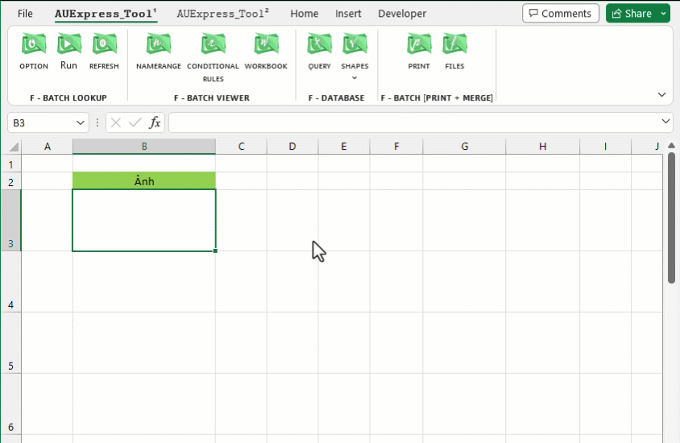

Lựa chọn một trong các phương thức tùy chỉnh:

1. Insert From L: Chèn hình ảnh từ danh sách đường dẫn có sẵn. (Cho phép hypelinks)
2. Insert From D: Chèn hình ảnh từ hộp thoại.
3. Insert Objects: Tạo hàng loạt đối tượng giống nhau được chỉ định (checkbox, combobox, ảnh hoặc comment).
4. Delete Objects: Xóa các đối tượng được chỉ định (checkbox, combobox,..).
5. Select Objects: Chọn các đối tượng được chỉ định (checkbox, combobox,..).
6. Align Objects: Căn lề các đối tượng được chỉ định (checkbox, combobox,..).
7. Scale Objects: Thu phóng các đối tượng được chỉ định (checkbox, combobox,..).
VD: Chèn một hoặc hàng loạt hình ảnh tràn viền ô (Fit).
Hỗ trợ chèn tất cả các kiểu ảnh Excel cung cấp png, jpg, jpeg, tif, ico, webp, gif,...
Có thể chọn nhiều loại ảnh (khác đuôi) đồng thời cùng lúc trước khi chèn.
Tự động thay đổi vị trí, kích thước trong quá trình lọc (Filter) hoặc co dãn cột, hàng.
Hỗ trợ duy trì tỷ lệ, góc xoay ảnh ban đầu.
Related function
NUMBERTOWORDS Hàm đọc số thành chữ (phiên bản Anh-Việt).
GROUPBY Phân nhóm bảng dữ liệu dựa trên một mảng dữ liệu chỉ định, hỗ trợ tính toán tùy chỉnh.
XGROUP Hàm mở rộng của GROUP. (hỗ trợ các hàm nâng cao).
FLOOKUP (feature) Nhập liệu nâng cao, lọc-xuất nhiều dữ liệu đồng thời (Ribbon).
Return to Home